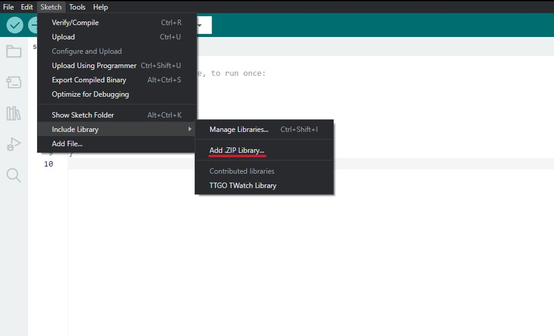

Step-by-Step Guide: Setting up Server and Hardware for Temperature and Humidity Monitoring
Hardware Setup:- Step 1: Gather parts required: TTGO Watch, DHT11 Sensor Module, USB cable to connect TTGO Watch to laptop/computer, cable to connect sensor to the watch

- Step 2: Connect the sensor to the TTGO watch using the GPIO port and the TTGO watch to the laptop using USB cable

Setting up the software environment:
- Step 1: Download and install the latest version of Arduino IDE

- Step 2: Once Arduino IDE is installed, open it, go to board manager (Tools -> Board -> Board Manager), search for ESP32 and install esp32 by Espressif Systems

- Step 3: Install USB to UART Driver

- Step 4: Download the T-Watch Library

- Step 5: Add the TWatch Library to Arduino IDE (Sketch -> Include Library -> Add .ZIP Library -> Select the ZIP file)

ESP32 Code Deployment:
- Step 1: Clone the following GitHub repository using the command in command prompt or shell
(Make sure you have Git installed)
git clone https://github.com/tejaswigowda/ame498-598Fall2023.git

- Step 2: Setup a Hotspot to connect the TTGO Watch to the server
- Step 3: After completing the Hardware and Software setup, make the changes in your code (Hotspot details and Public IP of your EC2 Instance) and deploy the code on the TTGO Watch

Server Setup on EC2:
- Step 1: Log in to your AWS Academy Canvas portal and navigate to Sandbox situated in Modules

- Step 2: Click on Start Lab and wait or the red dot next to AWS turn green and then click on it

- Step 3: In the search bar, search for EC2 and click on it

- Step 4: Click on Launch instance

- Step 5: Name your server and for the Amazon Machine Image select Ubuntu Server 20.04 LTS

- Step 6: Scroll down. You may choose to proceed without a key pair. Change the storage to 28 GiB and then click on Launch Instance

- Step 7: Select the instance, go to the Security tab and click on the Security groups

- Step 8: Click on Edit inbound rules

- Step 9: Add rule(s) as per your requirement. Generally, it is the 1234 port (set source to Anywher IPv4) and 8080 port (set source to MyIP)

- Step 10: Go back to instances, select your instance and click on Connect

- Step 11: Select the instance, go to the Security tab and click on the Security groups
- Step 12: A new tab will open giving you access to the instance console

- Step 13: In the console add the following commands
curl -s https://gist.githubusercontent.com/tejaswigowda/f289e9bff13d152876e8d4b3281142f8/raw/df37df2e16a3166e686357a045751a7c18bbeebe/installNodeMongoUbuntu16.04.sh | bash
sudo npm install -g a
sudo npm install -g http-server - Step 14: Clone your own repository with the code for the server by putting in the following in your instance console
If public repo:git clone https://github.com/tejaswigowda/ame498-598Fall2023.git>
If private repo, generate a token in setting of your github:git clone https://[token]@github.com/tejaswigowda/ame498-598Fall2023.git
- Open a web browser and navigate to the IP address of your EC2 instance.

- The webpage should display the temperature and humidity readings.